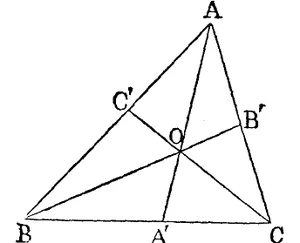
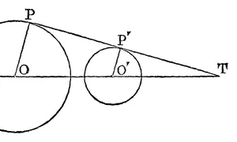
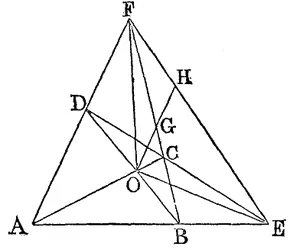
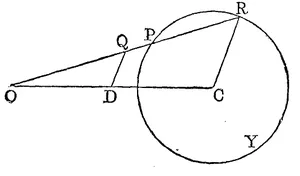
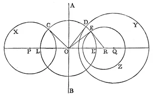
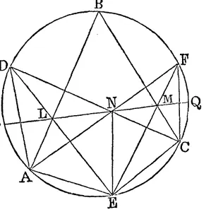
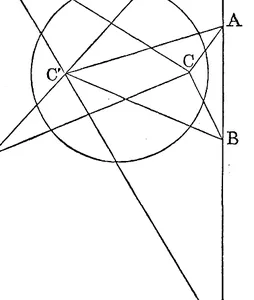
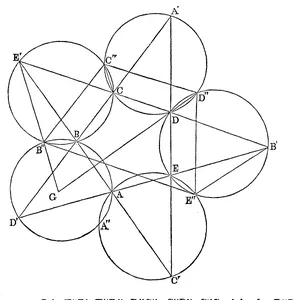

Book VI: Additional Propositions & Exercises¶
Additional Propositions & Exercises Extending Euclid’s Book VI (pp. 67–164, Folios 0093–0190)
Book VI of John Casey’s Sequel to Euclid (5th ed., 1888) is the foundational modern extension of Euclidean proportion and projective geometry in the nineteenth century. Across eight monumental sections, Casey introduces Ceva’s and Menelaus’s transversal theorems, centres and axes of similitude (Monge’s theorem), the theory of harmonic section and the complete quadrilateral, circular inversion and Casey’s generalized Ptolemy theorem (with his celebrated proofs of Feuerbach’s and Hart’s theorems), coaxal circles and Poncelet’s theorem, anharmonic (cross) ratio, Desargues’s homology and Pascal’s hexagrammum mysticum, the theory of poles and polars with Brianchon’s theorem by reciprocation, and an extensive treasury of 142 miscellaneous exercises.
Outline of Sections¶
I. Theory of Concurrent Lines & Transversals (pp. 67–81)¶

Book VI, Section I: Theory of Concurrent Lines & Transversals (1888 English)
Prop. 2 (:person:`Ceva’s <ceva>` Theorem, 1678).—If three concurrent lines $AO, BO, CO$, drawn from the angular points of a triangle, meet the opposite sides in the points $A', B', C'$, the product of the three ratios
$$ \frac{BA'}{A'C}, \quad \frac{CB'}{B'A}, \quad \frac{AC'}{C'B} $$
is unity.
Book VI, Section I Summary — Theory of Concurrent Lines & Transversals
Section I marks the fundamental transition in Casey’s Sequel from metric Euclidean geometry to projective and transversal invariants:
Book VI, Section I Notes — Historical & Cross-Canon Commentary
The duality between concurrency and collinearity in Section I bridges ancient Alexandrian spherical geometry to modern European synthetic geometry:
II. Centres and Axes of Similitude (pp. 82–86)¶

Book VI, Section II — Centres and Axes of Similitude
Book VI, Section II Summary — Centres and Axes of Similitude
For two coplanar circles $C_1(O_1, r_1)$ and $C_2(O_2, r_2)$:
Book VI, Section II Notes — Monge, Homothecy & Axes of Similitude
Gaspard Monge discovered the theorem of the three collinear centres of similitude in 1798 using a brilliant 3D projection argument:
III. Theory of Harmonic Section (pp. 87–94)¶

Book VI, Section III — Theory of Harmonic Section
Book VI, Section III Summary — Harmonic Section & Complete Quadrilateral
Harmonic Conjugates: Four collinear points $A, B, C, D$ satisfy $(A, B; C, D) = -1$ when:
Book VI, Section III Notes — Pappus, Chasles & Harmonic Section
The harmonic properties of collinear segments, pencils, and the complete quadrilateral descend directly from Pappus of Alexandria's Synagoge Book VII (c. 340 CE, modeled symbolically in geometor/pappus):
IV. Theory of Inversion (pp. 95–112)¶

Book VI, Section IV: Theory of Inversion (1888 English)
Book VI, Section IV Summary — Theory of Inversion
Section IV contains the mathematical climax of Casey’s treatise:
Book VI, Section IV Notes — Casey (1861, 1866) & Hart (1861)
Section IV preserves John Casey’s own most celebrated contributions to pure mathematics, integrated directly into his text:
V. Coaxal Circles (pp. 113–126)¶

Book VI, Section V: Coaxal Circles (1888 English)
Book VI, Section V Summary — Coaxal Circles
Section V investigates systems of circles having a common radical axis and their profound connections to inversion, projectivity, and closure theorems:
Book VI, Section V Notes — Poncelet, Hart & Apollonius
Section V brings together several remarkable chapters in nineteenth-century geometry:
VI. Theory of Anharmonic Section (pp. 126–140)¶

Book VI, Section VI — Theory of Anharmonic Section
Def.—A system of four collinear points $A, B, C, D$ make, as is known, six segments; these may be arranged in three pairs, each containing the four letters—thus,
Book VI, Section VI Summary — Anharmonic Section & Projective Geometry
Section VI develops the projective foundations of modern synthetic geometry:
Book VI, Section VI Notes — Desargues, Pascal & Chasles
Section VI encapsulates the grand seventeenth-century dawn and nineteenth-century resurgence of projective geometry:
VII. Theory of Poles and Polars, and Reciprocation (pp. 141–147)¶

Book VI, Section VII: Theory of Poles and Polars, and Reciprocation (1888 English)
Book VI, Section VII Summary — Poles, Polars & Reciprocation
Section VII establishes the projective duality of poles and polars with respect to a circle:
Book VI, Section VII Notes — Poles, Polars & Reciprocation
Philippe de La Hire (1685): First systematic treatment of harmonic poles and polars for conic sections in Sectiones Conicae.
VIII. Miscellaneous Exercises (pp. 148–164)¶

Book VI, Section VIII: Miscellaneous Exercises (1888 English)
The lines from the angles of a $\triangle$ to the points of contact of any $\odot$ touching the three sides are concurrent.
Book VI, Section VIII Summary — Miscellaneous Exercises
Section VIII brings together 142 advanced problems and theorems serving as a master capstone to Book VI, integrating Euclidean geometry with modern nineteenth-century developments:
Book VI, Section VIII Notes — Miscellaneous Exercises
Jakob Steiner (1826): Jakob Steiner published his famous porism on closed chains of tangent circles between two non-concentric boundary circles in Crelle’s Journal (1826). The metric criterion linking radii $R, r$, distance $\delta$, and winding numbers $(m, n)$ appears in Exercise 135.